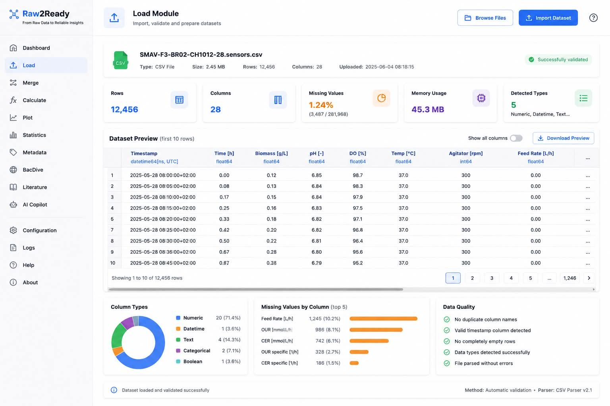
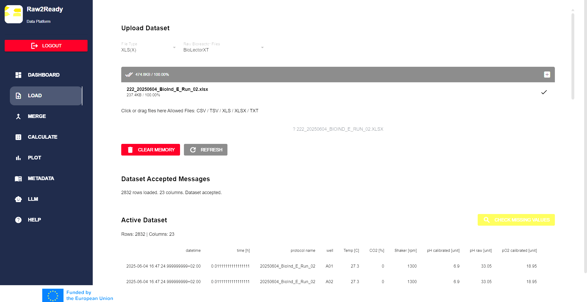

Load Module
Import, validate and prepare heterogeneous fermentation datasets for downstream analysis.
Overview
The Load Module is the entry point of the Raw2Ready workflow. It imports heterogeneous experimental data originating from multiple industrial biotechnology devices and transforms them into standardized in-memory datasets that can be processed by the remaining modules.
During loading, Raw2Ready performs automatic validation, datatype inference and preliminary quality assessment to ensure the imported dataset is suitable for downstream processing.
Objectives
- Import heterogeneous datasets.
- Validate experimental files.
- Detect unsupported formats.
- Preview dataset contents.
- Automatically infer datatypes.
- Store datasets inside Runtime Memory.
Supported File Formats
| Format | Description | Status |
|---|---|---|
| CSV | Generic comma-separated datasets | Supported |
| Excel (.xlsx) | Microsoft Excel workbooks | Supported |
| Sartorius | Raw bioreactor exports | Supported |
| BioLectorXT | BioLector experimental exports | Supported |
| Gas Analyzer | Time-series gas measurements | Supported |
Load Workflow
Importing a dataset follows a structured sequence of operations that guarantees the integrity of the imported data before it enters the Raw2Ready processing pipeline.
User selects dataset
↓
File validation
↓
Format detection
↓
Dataset parsing
↓
Column identification
↓
Datatype inference
↓
Preview generation
↓
Runtime memory storage
Automatic Dataset Validation
Before a dataset is accepted into the Raw2Ready workflow, several validation procedures are executed automatically to ensure data quality and compatibility with downstream modules.
- Verify that the selected file exists.
- Validate supported file extensions.
- Detect empty datasets.
- Check duplicate column names.
- Identify corrupted files.
- Inspect missing headers.
- Verify timestamp availability.
- Generate informative error messages.
Validation is performed automatically before any preprocessing operation begins, preventing incompatible datasets from propagating through the analysis pipeline.
Automatic Datatype Detection
After loading the dataset, Raw2Ready analyses every column and automatically determines the most appropriate datatype.
| Detected Type | Examples |
|---|---|
| Numeric | Biomass, pH, DO, OUR, CER |
| Datetime | Timestamp, Sampling Time |
| Text | Organism Name, Notes |
| Boolean | True / False variables |
| Categorical | Reactor ID, Experimental Group |
Dataset Preview
Before processing, Raw2Ready provides an interactive preview of the imported dataset.
- Display first rows of the dataset.
- Display column names.
- Display detected datatypes.
- Display dataset dimensions.
- Display missing values.
- Display memory usage.
Suggested Figure
Figure XX — Dataset Preview Window

Missing Value Inspection
Immediately after loading, the system evaluates missing values across all variables.
- Total missing values.
- Percentage of missing data.
- Variables with highest missing rate.
- Heatmap visualization.
- Missing-value summary table.
Early identification of missing values allows users to perform data cleaning before statistical analysis or machine learning.
Runtime Memory Integration
Once validation is complete, the imported dataset is stored inside the Runtime Memory Manager.
Runtime Memory enables every Raw2Ready module to access the currently active dataset without requiring repeated file loading.
Load Module
│
▼
Runtime Memory
│
├── Merge Module
├── Calculate Module
├── Plot Module
├── Statistics Module
├── Metadata Module
└── AI Agents
User Interface
The NiceGUI interface provides an intuitive workflow for importing datasets.
- Upload button.
- Drag-and-drop support.
- Recent datasets.
- Dataset information panel.
- Preview table.
- Validation status.

Best Practices
- Use descriptive filenames.
- Maintain consistent timestamp formats.
- Verify units before importing.
- Avoid duplicate column names.
- Keep metadata synchronized with datasets.
- Inspect missing values before merging.
Troubleshooting
The following table summarizes common problems encountered during dataset loading together with their recommended solutions.
| Problem | Possible Cause | Recommended Solution |
|---|---|---|
| Dataset cannot be loaded | Unsupported file format | Verify that the file is CSV, Excel or a supported Raw2Ready format. |
| Incorrect timestamps | Datetime column not recognized | Ensure timestamps use a consistent format. |
| Missing columns | Corrupted or incomplete dataset | Verify the exported experimental file. |
| Unexpected missing values | Incomplete experimental recording | Inspect missing-value statistics before continuing. |
| Slow loading | Very large datasets | Use filtering or load only required variables. |
Summary
The Load Module is responsible for importing, validating and preparing experimental datasets for every subsequent Raw2Ready component.
By automatically detecting datatypes, validating file integrity, inspecting missing values and storing datasets inside Runtime Memory, the module provides a reliable foundation for preprocessing, statistical analysis and AI-assisted reasoning.
Every Raw2Ready workflow begins with the Load Module. The quality of downstream analyses depends directly on the correctness and completeness of the imported datasets.
Next Step
After successfully loading a dataset, users typically continue with the Merge Module to synchronize measurements from multiple instruments, or directly proceed to the Calculate Module when working with a single dataset.